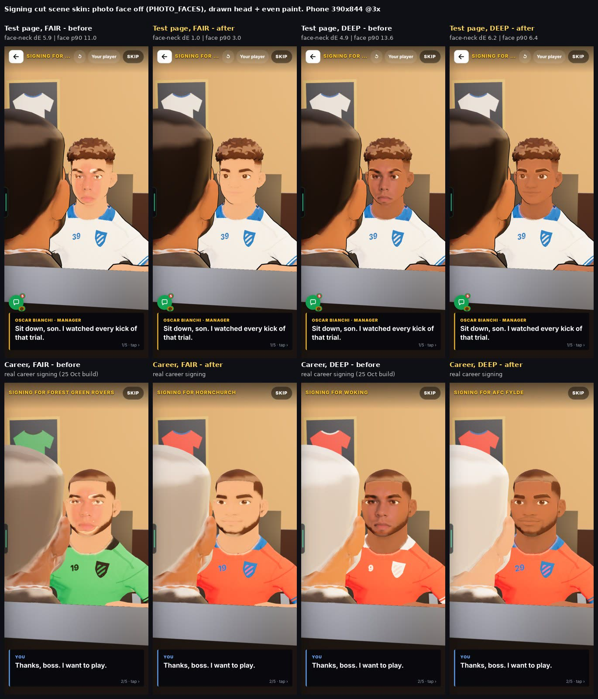
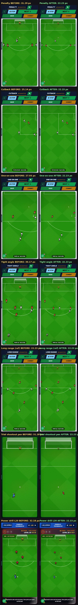

Live on the site since 25 Oct 2026, about 16:10 UK.
25 Oct 2026. Your comments on 0.108h, worked through and now live: skin in the cut scenes, men the same size on every chance, a smooth build-up camera, and headers and volleys redone to your notes.
The short version
1. Cut scenes: one skin colour at light tones. Face against neck 5.9 → 1.0. Darker tones wait on a call.
2. Every chance kind draws men at 22 px. Penalties, cutbacks, one-on-ones, crosses, drills and the trial. Was up to 31 px (37 on a byline cross).
3. Build-ups: one smooth camera glide. Worst one-frame jump 640 → 38 px a second.
4. Headers and volleys: redone to your notes, live. No drag-back arrow: straight to the ball screen, tap the ball. No late zoom, men stay 22 px, the cross comes in once.
CHECK THESE
All live on the site now.
1 · FIXED: CUT SCENES, ONE SKIN COLOUR
The fair face in the signing scene now matches the neckliveseenmeasured
Problem
In the signing cut scene, at a light tone, the cheeks were pinker than the neck, with a pale edge at the jaw.
Why
The cut scenes laid a photo face over the drawn head, even with photo faces switched off. The photo was a different colour from the neck.
Fix
Cut scenes now use the drawn head when photo faces are off. The same fix is in the signing, office, farewell and award scenes.
Light tone: face against neck, how different they look (under 2 = can't see it)
5.9 1.0
Deep, brown and dark tones: still a touch lighter than the neck
4.6–6.6
The darker tones need a change to the shared skin paint. That waits on a call (below).

Left of each pair before, right after. Look at the fair face against the neck: one colour now. Tap to enlarge.
2 · FIXED: EVERY CHANCE KIND DRAWS MEN AT 22 PX
Men, keeper and ball are the same size on every chanceliveseenmeasured
Problem
Penalties, cutbacks, one-on-ones and crosses drew men up to 31 px on a phone. A byline cross drew them up to 37 px. Other chances: 22 px.
Why
The men were sized against each chance's camera, so a closer camera made bigger men. Headers had the same fault in 0.108h.
Fix
Men, keeper and ball are drawn at 22 px on every chance kind, the drills and the trial. Only the pitch zooms. Goal rates are the same: this changes the drawing only (15 match test sets pass).
A man on a penalty, cutback or one-on-one (px, phone)
up to 31 22
A man on a byline cross (px, phone)
up to 37 22
The size sheet: every chance kind, before and after (a long picture)

Left before, right after. Compare each pair with the long-range row, which did not change.
Your call
The trial shootout penalty is a close-up. At 22 px the men look small inside the big goal. It can stay bigger with one line.
3 · CHANGED: BUILD-UPS USE ONE SMOOTH CAMERA GLIDE
The camera plans the whole move, then glides onceliveseen frame by framemeasured
You said
"I don't like how the camera can move in multiple movements, it should be smooth."
Why
The camera re-aimed at every pass. It moved, stopped and moved again. It also snapped back when a build-up ended offside.
Fix
The whole move is planned first. Then the camera makes one eased glide from the start to the chance. It leans with the ball and zooms out a little on long balls. The ball never leaves the screen.
Biggest one-frame camera jump (pixels a second)
640 38
Look fora long ball, then tiki-taka ending OFFSIDE: the camera stops and starts, and snaps at OFFSIDE.
Speed
Before.
Look forthe same two: one smooth glide each, no snap at OFFSIDE.
Speed
After.
4 · FIXED: HEADERS AND VOLLEYS, REDONE TO YOUR NOTES
Straight to the ball screen: tap the ballliveseen frame by framemeasured
What happened
A tap-the-goal version was tried and you turned it down. It never went live. This is the redo, built to your notes.
What it does now
No drag-back arrow. Everything else about the chance stays.
Straight to the ball screen. “Head it?” or “Volley it?” opens by itself; you tap the ball.
No late zoom. Men stay 22 px the whole time.
The cross comes in once. No second run before you play it.
The trail follows the ball from the cross to your man.
The same in the Head & Volley drill. No other acrobatic kinds exist in the game, so there is nothing else to change.
Header, goals per 100 chances at Aerial 30 / 60 / 90 (now, then before)
17.7 / 24.8 / 34.3 19.0 / 25.0 / 35.3
Volley, goals per 100 chances at Aerial 30 / 60 / 90 (now, then before)
19.0 / 27.2 / 33.8 19.3 / 26.3 / 35.3
Every rate is within about 1 of before, so the new way scores about as often as the old one.
Look forthe cross comes in once from the right. The “Head it?” screen opens by itself, no arrow. Tap the ball’s right side, high: it goes left, away from the keeper. The trail follows the ball. Goal. The men stay 22 px; the camera never zooms.
Speed
A header, built version.
Look forthe cross bounces in once to your man at the edge of the box. “Volley it?” opens by itself and the height marker drops into the green. Tap the right side: SWEET VOLLEY to the left, goal. Men 22 px, no zoom.
Speed
A volley, built version.
KNOWN ISSUES
Darker skin tones in cut sceneswaiting on a call
Problem
Deep, brown and dark faces in cut scenes are still a touch lighter than the neck (gap 4.6 to 6.6; under 2 can't be seen).
Status
The fix means changing the shared skin paint, which every 3D man uses. Your call 1.
YOUR CALLS
Change the shared skin paint so darker tones match too?
It closes the 4.6 to 6.6 gap. It touches every 3D man, so the garden, shop and card need a fresh look after.
Trial shootout penalty: keep 22 px, or let it stay bigger?
It is a close-up, so men look small in the big goal at 22 px. One line keeps it bigger.
SEEN / NOT SEEN
Seen on a screen
Signing scene, fair and deep, before and after, on the test page and in a real career
Every chance kind before and after (the size sheet)
Build-ups before and after, frame by frame
A header and a volley in the built version, every frame at 4 a second (arrow gone, no zoom, one cross)
Measured (numbers)
Face against neck colour gap at 4 tones
Men in px per chance kind
Camera speed per frame in build-ups
Men in px in the header and volley clips (22.2 every frame)
Goal rates: 15 match test sets pass
Reasoned, not seen
The office, farewell and award scenes (same fix as signing, not filmed)
All three on a real phone
The numbers, if you want them
Skin, signing scene, fair: face against neck 5.9 before, 1.0 after. Deep: 4.9 before, 6.2 after on the test page (the drawn head; part of the darker-tone call).
Size: 22 px is size B, the long-range size from 0.108h. Before: up to 31 px (penalty, cutback, one-on-one), up to 37 px (byline cross).